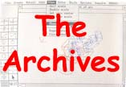
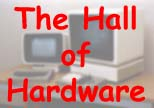

The Unigraphics
Virtual
Museum.
Welcome! You have just entered the "Lobby" of our virtual museum.
Here you will learn about the history of Unigraphics and the people who
developed it. If you are not familiar with Unigraphics but would
like to learn more, please select here.
Note that this is a virtual museum, however we have set it up just like
a real museum with several "Galleries" just off from the main "Lobby".
Each "Gallery" is dedicated to a different aspect of Unigraphics.
Some of these will review the history through the decades while others
will be reserved for various specialized topics. As you visit each
"Gallery" you will find information and many "artifacts" donated by various
friends
of the museum. At times you will notice that some of these
"artifacts" are from other products which may have had either a direct
or perhaps an indirect impact on the evolution of Unigraphics. These
are included here both for their historical value and because without them,
it may be difficult for many of you to understand the real history of Unigraphics.
Now we invite you to browse through the various "Galleries" and we hope
that you will find the experience both entertaining and perhaps even enlightening.
If you have any questions, please feel free to contact the museum curator.
John R. Baker
Product 'Evangelist' (ret)
Irvine, CA
Siemens PLM
The Galleries of the Era's.
